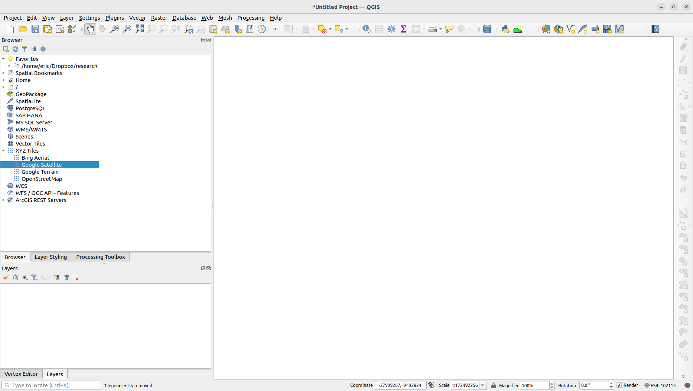
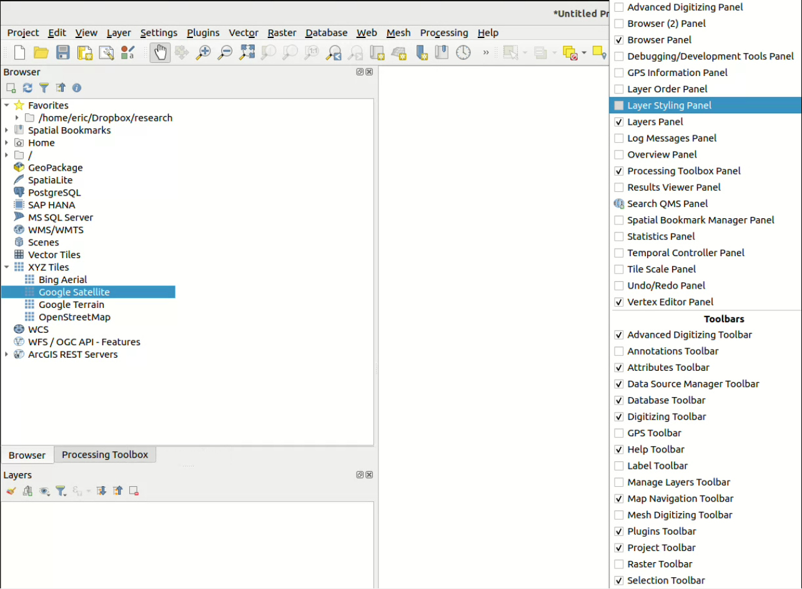
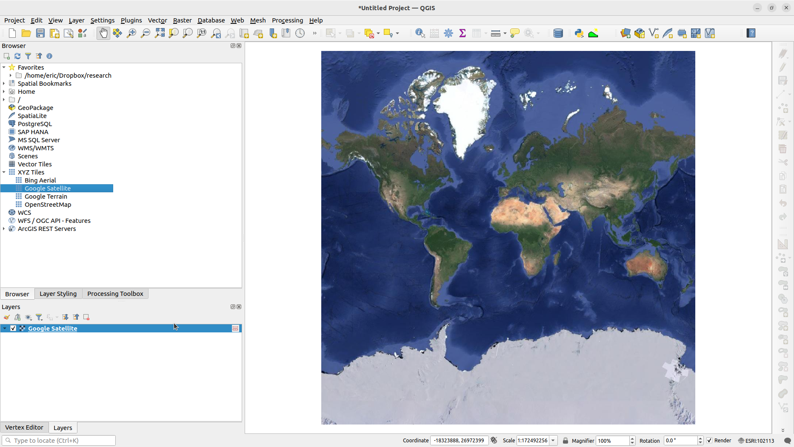

Software#
Installing QGIS#
If you find yourself needing to work off campus, or work at another location on campus, you may need to install software on your computer to process and work with these data. Almost all of you should have a web browser, Which is how you will enter day though, and so the main people software that you may find yourself needed to install is QGIS.
QGIS is open source software, which means that it is written and developed by volunteers around the world, and all of the code that defines how the software works is available both for free and is available for you to modify if you wish. Because of this, QGIS is rapidly becoming one of the most widely used gis software in the world, and you might find yourself using it often in the future getting to know it now is a good investment both for understanding earth systems, as well as developing a marketable skill.
You can download QGIS here. The user manual is here. If you are installing software, you might go straight to section 5.
Note
Please ensure you download/install a newer version of QGIS. We want version 3.34 or higher.
Brief intro to QGIS#
QGIS Is an incredibly complicated piece of software, with an extremely rich feature set. There are lots of things you can do in the software and we will only be really using one or two of the tools and resources available. If this interests you and you continue to want to work with gis, I encourage you to take a class, or to come up with a project of your own (I’m happy to work with you on this) that may require gis. I believe that learning by doing is the best way to figure out how to use geographic data processing software. You need a problem to work on to motivate you and to focus your efforts, so if there’s something that you’re interested in, please reach out.
That said, there’s a few things you will need to use in order to execute our research project and collect meaningful data. This is what you see when you first open up QGIS:

Toolbars are at the top, a file browser and a layers window are to the left and the main central screen displays a map view of whatever data you are displaying.
We will load two main kinds of data into QGIS: (1) raster data and (2) vector data. The main thing we will work with is high resolution topography data generated using lidar. We will also often use lines that represent the center line of a river as a major piece of data that we will reference to. There are many ways to load the data into the software. The most intuitive perhaps is that you can drag and drop from whatever file browser you have in your computer.
When you have loaded data into the software it will appear in the layers window. Often, QGIS will also choose a default method to visualize the data. Visualizing the high resolution lidar data is discussed in depth in this other page, but you can modify how the data are displayed by selecting different choices in the properties menu that define the “style” or “symbology” of the data. These are just jargon terms that mean “how the data are displayed.”
To access the properties menu simply double click on the layer in the layers menu. The properties dialog box should pop up, and you should be able to see a wide variety of different options that you can specify or change. We will be focusing on the “symbology” tab. In that tab you will be able to alter the color map that is used to define what elevations are dark and which are light. You can choose from a wide variety of different color gradients. For data that are represented by lines you can choose whether the line is dashed, solid, or dotted. You can choose the color and the shape of points, really there is no limit to the options available to you.
You will often want to make changes to the layer symbology repeatedly within a working session. When you are doing this, it becomes annoying to have to open the properties menu, make a change, and then close the properties menu to see whether the change had the effect that you wanted. To get around this you can place the symbology menu in a sidebar much like the browser or the layers dialogue. To do this simply right click on an area around the upper toolbars, and find the “Layer styling panel”. See the below screenshot for a helpful demonstration of how to do this. After you’ve done this, you should be able to manipulate the way layers are displayed and have them update in real time.

Adding a google satellite image basemap#
You may find it very helpful to have satellite imagery underlying all of the data that you want to display. Google satellite imagery servers are a marvel of modern technology. It is very easy and very quick to get high resolution imagery all across the world served to you over the internet. Here is a blog post but you can go to for more information. But for our purposes the easiest way to accomplish this is to go to the xyz tiles option in the qgis browser window.
Open the browser panel. (usually on the left-hand side of the window)
find the entry for “XYZ tiles”, right click on this, and select “new connection”
Give the connection a name. I usually just type “Google Satellite”
Copy and paste this URL into the URL bar:
http://www.google.cn/maps/vt?lyrs=s@189&gl=cn&x={x}&y={y}&z={z}
Click OK, and an item with the name you gave it should appear beneath XYZ tiles. By double-clicking this, or dragging it into the layers window, you should be able to display satellite energy as if it were a layer in qgis. Here is an example picture of what it will look like when you have correctly enabled satellite imagery.
